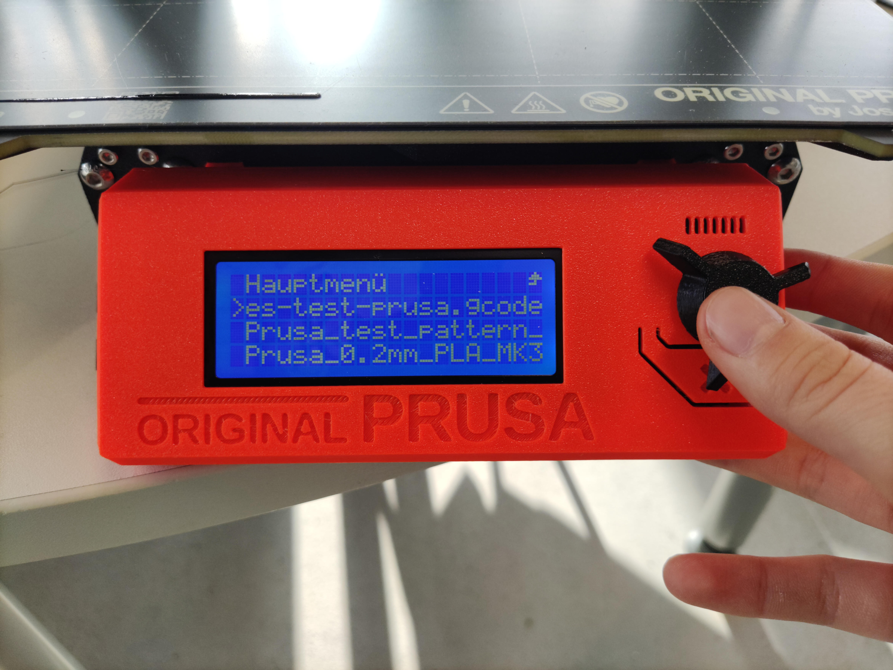
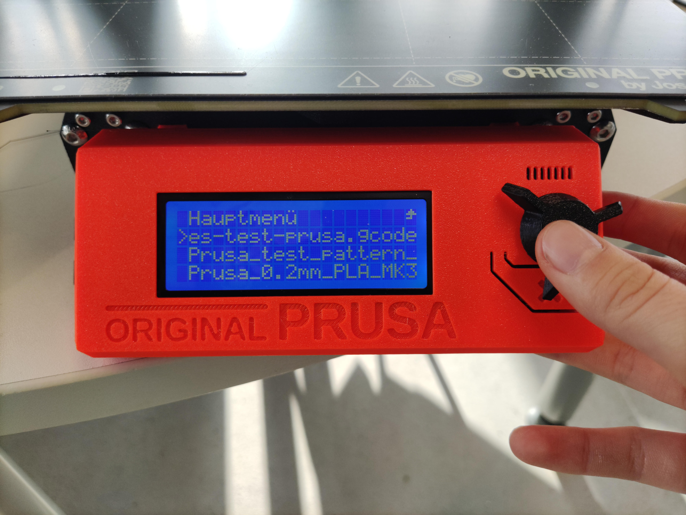

Testing Parameters
Overhang
In 3D printing, overhangs refer to portions of a printed object that extend outward at an angle greater than what the printer can bridge without additional support. Printing overhangs without proper support can result in sagging or misshapen layers, negatively affecting the print's quality.
To test overhang performance, a common practice is to print a dedicated overhang test model. This model typically features a series of horizontal protrusions at varying angles, gradually increasing in difficulty.
By systematically testing overhangs, you can fine-tune your printer settings, such as temperature, cooling, and print speed, to achieve better results and expand the range of geometries your 3D printer can successfully produce without compromising quality.
For testing the overhang we used a file from thingiverse (all-in-one test), that included several tests for parameters described below, which tested overhangs of different length and angle.
Test for Overhang in Cura. The red color in Cura shows recommended areas of support.
Tolerance
Tolerances in 3D printing refer to the permissible variation in the dimensions of a printed object compared to the intended design. Achieving accurate tolerances is crucial, especially in functional prints where precise fits and interlocking parts are essential. Testing tolerances helps ensure that the printed object aligns with the design specifications. To test tolerances, you can create a calibration model with features designed to evaluate the printer's accuracy.
Regularly testing tolerances and calibrating your 3D printer based on the results will contribute to consistently accurate prints, especially when precision is crucial.
We utilized a dedicated calibration test from thingiverse (tolerance test) to evaluate tolerances for both quadratic and round shapes.
Test for Tolerance in Cura.
Anisotropy
in 3D printing refers to the directional variation in material properties within a printed object. This phenomenon can occur due to the layer-by-layer additive nature of 3D printing, resulting in different strengths or appearances along different axes.
Identifying and understanding anisotropy is crucial, especially when structural integrity or surface finish is a priority in the final printed object.
We adopted a calibration test featured on the Fabacademy website (anisotropy test), specifically employing a simple angled structure designed to evaluate the impact of layer building on the breaking surface. The test involves intentionally breaking the printed object at the angled section, allowing us to observe and analyze how the layers influence the position and direction of the fracture. This method provides valuable insights into the layer adhesion and structural integrity of our 3D prints, aiding in the refinement of our printing parameters for enhanced overall performance.
Test for Anisotropy in Cura.
Wall Thickness
Wall thickness in 3D printing refers to the distance between the outer and inner surfaces of a printed object's walls. It is a crucial parameter, as inadequate wall thickness can compromise the structural integrity and functionality of the printed model. The appropriate wall thickness depends on factors such as the type of material being used and the intended application of the object.
We adopted a wall thickness and gap test featured on the thingiverse website (gap and wall thickness test). This test serves as the purpose for determining optimal wall thickness and gap settings, providing insights that are instrumental in refining our approach for future 3D printing applications and designs.
Test for Wall thickness and Gaps from the thingiverse website.
Bridging
Bridging in 3D printing refers to the ability of a printer to create horizontal spans or bridges between two support structures without the need for additional supports. It is a critical aspect of printing complex geometries and can significantly impact the quality and success of a print.
Testing bridging capabilities is essential for ensuring that a 3D printer can handle intricate geometries and create stable horizontal spans. It is particularly important in designs where support structures would be undesirable or difficult to remove. Regularly testing and optimizing bridging performance contribute to achieving high-quality prints across a variety of applications.
The bridging test for the printers was incorporated into the "All-In-One" test mentioned before. (all-in-one test)
Test for Bridging in Cura. The red color in Cura shows recommended areas of support.
Growing/Shrinking
In 3D printing, "growing" or "shrinking" refers to variations in the size of printed objects compared to their digital design dimensions. These deviations can occur due to factors such as material shrinkage, thermal effects, or inaccuracies in printer calibration. Understanding and testing for growing or shrinking is crucial to ensure the printed objects align with the intended specifications.
By systematically testing for growing or shrinking, you can refine your 3D printer settings to produce prints that closely match the intended dimensions. Regular calibration and adjustments based on testing outcomes contribute to the overall accuracy and reliability of your 3D printing process.
We have implemented a growing and shrinking test obtained from ensuring a evaluation of our 3D printers' dimensional accuracy for the used type of material. (What test was that?)
Stringing
Stringing in 3D printing refers to the occurrence of thin, unwanted strands or threads of filament between different parts of a printed object. These strands are commonly known as "strings" or "wisps." Stringing can negatively impact the visual quality and structural integrity of a 3D print.
The primary cause of stringing is often excess filament oozing or leaking from the nozzle when the print head moves between different areas of the print.
By carefully optimizing these settings and experimenting with different parameters, you can significantly reduce or eliminate stringing issues, resulting in cleaner and more precise 3D prints.
The bridging test for the printers was incorporated into the "All-In-One" test mentioned before. (all-in-one test)
Test for Stringing in Cura. The red color in Cura shows recommended areas of support.
Ultimaker S5
In the FabLab in Kamp-Lintfort there are several, types and models of printers. The first on we tested for the design rules are the Ultimaker S5, because we can print several things parallel (6 printers).
The main features:
- Filament sensor
- Z-Axis-Resolution of 0.02mm
- Prepared for composite filaments by cured filament drive screw
- Glass front cover for better heat distribution in the interior
- Revised feeder with ball bearing for filament change
- Filament thickness Ø2.85mm
- Live camera & material recognition
- Nozzle exchangeable (0.25, 0.4, 0.6, 0.8 mm)
Three of the Ultimaker S5 3D printers of the Lab
Overhang, Bridging, Growing/Shrinking and Stringing
In the very beginning, we started with one test piece to print, that is composed of multiple tests claiming to be an all-in-one test print. After downloading the file from here, we dragged and dropped the file into the window of the slicer Ultimaker Cura.
Next, we adjusted the print settings. Here, we used the "Fast 0.2 mm" profile to save some printing time. Additionally, we left the remaining print settings as the default because they usually work well. These are usually a layer height of 0.2 mm, an infill of 15% and a triangle pattern, no supports but a brim for built plate adhesion. The material was furthermore "Generic PLA"
These print settings were used for all prints on the Ultimaker S5 for characterizing the design rules.


The following procedure was applied to all prints on the Ultimaker S5.
After adjusting the print settings in Cura, we pressed "Slice" which generated a machine code, for the Ultimaker in the format of an .ufp file. We exported this to an external flash drive, that we plugged into the 3D printer. Here, we selected the desired file and pressed start.
Then, the 3D printer did the job all by its own. Before starting the print, it would heat up the nozzle and bed, load some filament, purge some of it as a test and level the bed. The total time of this print was about 2 hours and 30 minutes.
With the print being done, we let the 3D printer and the bed cool down for a couple of minutes which made it easier to dismount the 3D printed part form the glass plate. Then, we removed the brim by hand. This is the finished print:


Overhang
The maximum angle for the overhang can relatively easily be accessed with the test print. Here, overhang with angles between 0° and 80° were tested. From below, it can be seen, that an angle of 50° results in a bad overhang. The face is not smooth anymore but shows distinct filament strands that appear "to have fallen". The quality of the overhang proceeds to worsen with increasing angles.
Bridging
Bridging really surprised us. Even the longest bridge with 25 mm length was able to print. However, it shows a small bulge to the bottom. This is also true for most of the other lengths apart from the two smallest ones, namely 2 mm and 5 mm
In case the bottom bulge is not relevant, then 25 mm can easily be bridged. However, in case the dimensions must be precise, bridging should not exceed a length of 5 mm.
Growing/Shrinking
For assessing the growth of outside dimensions and the shrinkage of the inside dimension, the test print included two hollow cylindrical protrusions with different diameter. The outside diameters were designed to be 8 mm and 6 mm, respectively, with a wall thickness of 1 mm. The inside diameters were hence designed to be 6 mm and 4 mm, respectively.
However, in reality, these dimensions deviate. We measured the following dimensions
| Cylinder | Outer ⌀, design | Outer ⌀, print | Inner ⌀, design | Inner ⌀, print |
|---|---|---|---|---|
| Left (large) | 8.00 mm | 7.75 mm | 6.00 mm | 5.7 mm |
| Right (small) | 6.00 mm | 6.1 mm | 4.00 mm | 3.55 mm |
For the bigger cylinder, both inside and outside dimensions shrank by about 0.275 mm. For the smaller cylinder however, the inside of the cylinder shrank by 0.45 mm and the outside grew by 0.1 mm. This suggest that the slicer software, Ultimaker Cura, did not compensate for any growth or shrinkage of the 3D prints, at least not to a significant extend.
In total, the deviations might appear small but can be relevant for e.g. press fits and other parts, where tolerances are important.

Stringing
Despite the Ultimaker being a good printer, stringing can always be a problem for a good quality print. As we found out with
this test print, the Ultimaker is very much prone to stringing.
Tolerances

Even though the first test piece claimed to be an all-in-one test, there are many other relevant test that should be conducted to better characterize the design rules for the according printer. One of these factors are tolerances. Here, we downloaded an design file from here and printed it with the same settings and procedure as shown above.
The test piece consist of a grid of circles and rectangles slightly increasing the tolerances from left to right. Additionally, the grid is placed vertically as well. Two pegs that are printed horizontally and vertically, respecitvely, which have are included as well.
The smallest hole which fits the circular side of the vertically printed peg has a tolerance of 0.3 mm, both on the horizontal and vertical grid. The smallest hole for the horizontally printed peg however has a tolerance of 0.2 mm. This is surprising because for this placing, the round part of the peg shows an overhang with high angles in the bottom.

For the square holes, the smallest tolerance for the horizontally printed peg was 0.2 mm, for the vertically printed however 0.4 mm. In addition, the latter did only fit into the square hole with a tolerance of 0.4 mm on the vertical grid and not on the horizontal one. Here, we suspect again the swelling, this time on the bottom of the pieces, both of the peg and the grid. This phenomenon is common in 3D printing and is called "elephant's foot". This problem can be overcome by e.g. a better bed levelling, by decreasing the bed temperature by using a raft and/or by adding a chamfer to the model.
Anisotropy
In addition to the above test pieces, we printed a small "L"-shaped structure that we downloaded here. The anisotropy of the print is assessed by breaking the piece and investigating the resulting crack characteristics.
After printing it with the settings and procedures described above, we applied a force on both ends of the piece to break it into two pieces splitting at the inner corner of the "L". It did not need much force and it finally broke apart. As expected, the crack is within the xy-plane, which is parallel to the layers of the 3D print.

Gap Width and Wall Thickness

As a last test print to characterize the design rules of the Ultimaker S5, we decided on assessing the minimum gap width and wall thicknesses to be able to print. For this, we downloaded an .stl file from here and printed it with the settings and procedures described above.
After dismounting the printed parts from the bed, we investigated the print quality. The part for the gap width test for example shows all gaps, even the smallest one with a thickness of 0.2 mm. However, the smallest gap is so small, it may be already closed by a thin but yet transparent layer of PLA.
When investigating the quality of wall printing, we were quite surprised as even the smallest wall with a thickness of 0.2 mm was printed by the Ultimaker S5. Usually, traces that would be smaller than the nozzle, are not included in the slicing and thus not in the print. However, this print states the contrary as the nozzle size is 0.4 mm and a wall with 0.2 mm thickness was printed. We suspect that the speed of the print in combination with the speed of purging might affect the thickness of the printed filament. This theory might be supported by the thicker ends of the smallest wall.
Gap Test
Wall Test
Prusa i3 MKS3+
In addition to the Ultimaker S5, the FabLab has various other printers. However, the most popular one is the Prusa i3 MKS3+ and we will probably use the Prusa for the individual assignments as well. Therefore, we focused on this 3D printer as a second one characterizing the design rules.
The Prusa i3 MKS3+ we have at the lab
Overhang, Bridging, Growing/Shrinking and Stringing
We decided to use the same test files used on the Ultimaker, on the Prusa, so that we could compare the results later on. To prepare these files, we used PrusaSlicer.
The print settings we settled on using were: "0.20mm SPEED", filament: "Prusament PLA", no supports, no brim, and 20% infill.
These print settings were used for all prints on the Prusa i3 MKS3+ for characterizing the design rules.
The following procedure was applied to all prints on the Prusa i3 MKS3+.
 

After inserting the SD card with the test files, we selected "Drucken von SD" (our printers are in German) which means "print from SD", then we selected the file we wanted to print and pressed print.
The slicer software estimated that the print job would take 4 hours 15 minutes, so we left it to print overnight in the lab. On the next morning, we gently removed the tests from the printer bed with the help of a scraper tool. This is the finished print:
Overhang
From the side angle, it can be seen that an angle of 75° onwards results in a bad overhang.
At an angle of 75° to 70°, the surface is no longer as smooth but still retains its shape. However, from 75° onwards, we see that the filament starts to "droop" or "fall".
Bridging
All of the bridge lengths we tested were able to be printed without so much fault, however it is noted that on the two longest bridges with 20mm and 25mm length, the bottom of these prints were not completely smooth and flat, they appeared to have a slight bulge.
Growing/Shrinking
The goal of conducting this test is to see how well the slicer software compensates automatically for the potential shrinking or growing of the material. In the test file, the two cylinders were designed to be 8mm and 6mm, respectively, with a wall thickness of 1mm. The inside diameters were 6mm and 4mm, respectively.
| Cylinder | Outer ⌀, design | Outer ⌀, print | Inner ⌀, design | Inner ⌀, print |
|---|---|---|---|---|
| Left (large) | 8.00 mm | 8.00 mm | 6.00 mm | 5.8 mm |
| Right (small) | 6.00 mm | 6.00 mm | 4.00 mm | 3.75 mm |
For both sizes of the cylinders, the outside dimensions were printed as designed. However, the inside dimensions there was a slight shrinkage of 0.2mm (large cylinder) and 0.25mm (small cylinder).
Stringing
The Prusa printer, so far relative to the tests conducted, makes better prints than the Cura. However, for smaller designs and structures like the small extruded cylinders, the printer is prone to stringing, which for detailed prints will require some clean up after printing to get a good finish.
Gap Width and Wall Thickness in Prusa
The result obtained from Prusa for the gap test shows significant differences from Ultimaker in terms of print quality and visibility of gaps.
The gap widths are the same in the results we obtained from Prusa and Ultimaker. However, in the result obtained from the Ultimaker, we see a transparent lamination on the back of the printed product. This makes it difficult to see the gap of the narrowest width. In contrast, there is no transparent lamination in the gap test obtained from Prusa. Thus, the narrowest gap is more visible, but the gap is still not wide enough to see the back of the product.

Gap Test for Prusa
The result we obtained from Prusa for the wall test is considerably better than the result obtained from Ultimaker in terms of print quality. In the wall test from Prusa, even if the filament thickness inside the walls is very thin, we see that Prusa can stick all the filaments together.
In contrast, the result from Ulitimaker shows that the filaments inside the wall are separated from each other.

Tolerance Test in Prusa
In the tolerance test, aims to observe the shrinking that will occur when the printed product is positioned horizontally and vertically.
As a result of our tolerance test in Prusa, it was observed that the stick printed in the horizontal position shrinks less than the stick printed in the vertical position. This can be understood by the fact that the stick printed in the vertical position goes through the holes more easily.